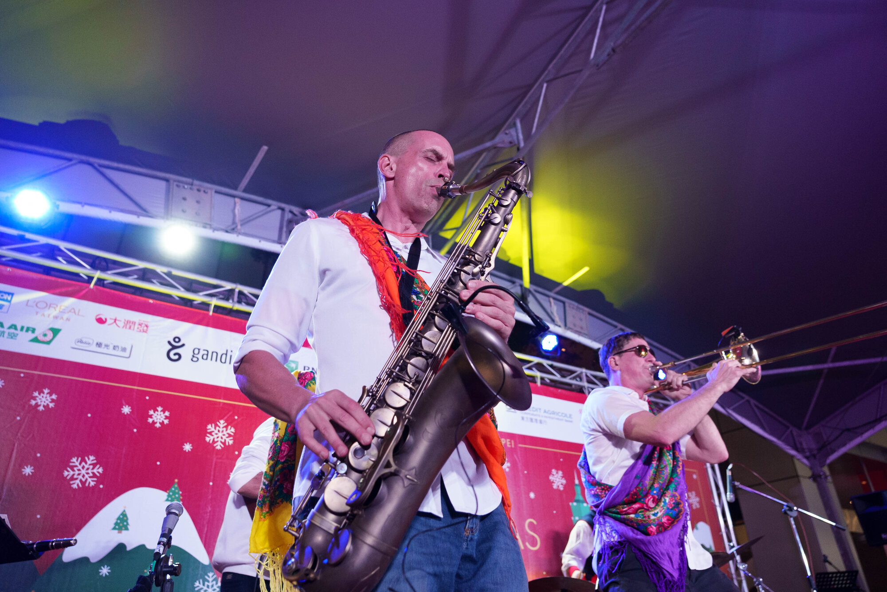
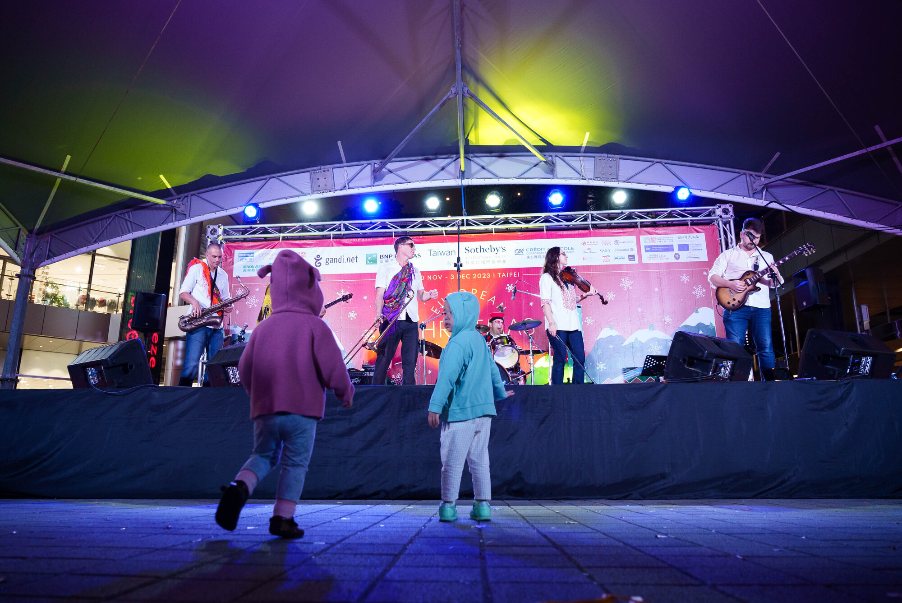

再次回到市集
之前歐洲聖誕市集演出的現場畫面。

Balkazar · 台北現場
回到聖誕市集的大舞台，星期四晚上完整演出 90 分鐘。
聖誕市集 · 現場
去年演過歐洲聖誕市集之後，Balkazar 今年再回來，帶來完整 90 分鐘晚間演出。
巴爾幹旋律、Ska、Funk、Rock、奇數拍，全部搬上大舞台。逛市集、吃點熱的，晚上留下來看我們。

再次回到市集
之前歐洲聖誕市集演出的現場畫面。
台北大舞台
12 月 3 日星期四・晚上 8:00–9:30。
演出
為聖誕市集舞台準備的完整 Balkazar 演出：巴爾幹派對音樂、吉他、管樂、Ska、Funk，讓現場動起來。
12 月 3 日・星期四・晚上 8:00–9:30・台北。